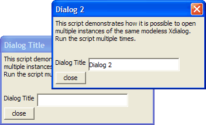

Multiple Instances of a Modeless Dialog Box
This script demonstrates how it is possible to launch multiple instances of the same modeless Xdialog box. When you run a script that displays an Xdialog box twice, the second instance simply replaces the existing Xdialog box, and you only end up with one open instance of the Xdialog box. This is because the dialog box title is a constant, e.g. 'MyDialog'. By making the dialog title variable a random variable name (using the TIME()function) and by using indirection in the dialog title (e.g. set the dialog title to "@=varname") 'we can open multiple instances of the Xdialog.
For example, the first instance will have a dialog title of @=title_var1230. The contents of the variable title_var1230 will be "Dialog Title", and so the actual title that will be displayed on the dialog box is "Dialog Title".
title_var_name = "title_var" + stritran(time(),":","_") eval(title_var_name) = "Dialog Title" dlg_title = "@=" + title_var_name message = "This script demonstrates how it is possible to open multiple instances of the same modeless Xdialog. Run the script multiple times." ui_modeless_dlg_box(dlg_title,<<%dlg% {text=50,5:Message}; Dialog Title [.30title!title_change]; %dlg%,<<%code% if a_dlg_button = "title_change" then eval(title_var_name) = title end if if a_dlg_button = "close" then ui_modeless_dlg_close(dlg_title) end if %code%) |

Next
Limitations
Desktop applications only
See Also